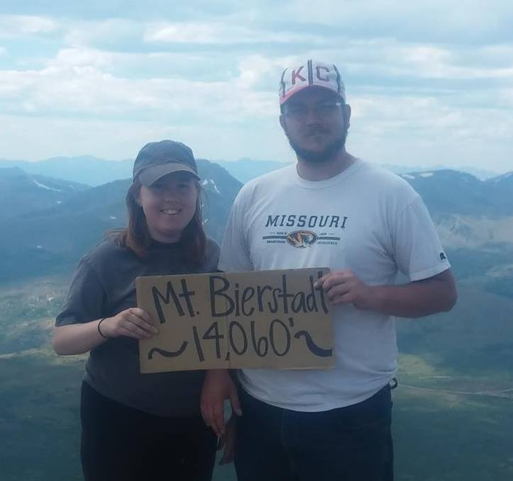

About Me
I was born in Elizabeth, CO. I moved to Denver when I was 17 to attend the University of Colorado Denver, where I studied Philosophy with an emphasis in formal logic.
My first job was at Borders, where I worked for about seven months until the company went out of business. I was then hired at Barnes and Noble, where I worked for four years. I loved talking about books but not the hours or physical demands of retail, so I applied for a position as a library tech at Arapahoe Public Libraries. I worked there for almost two years at a number of different libraries.
In my freetime, I enjoy playing board games with my husband and making friends with strangers' pets.